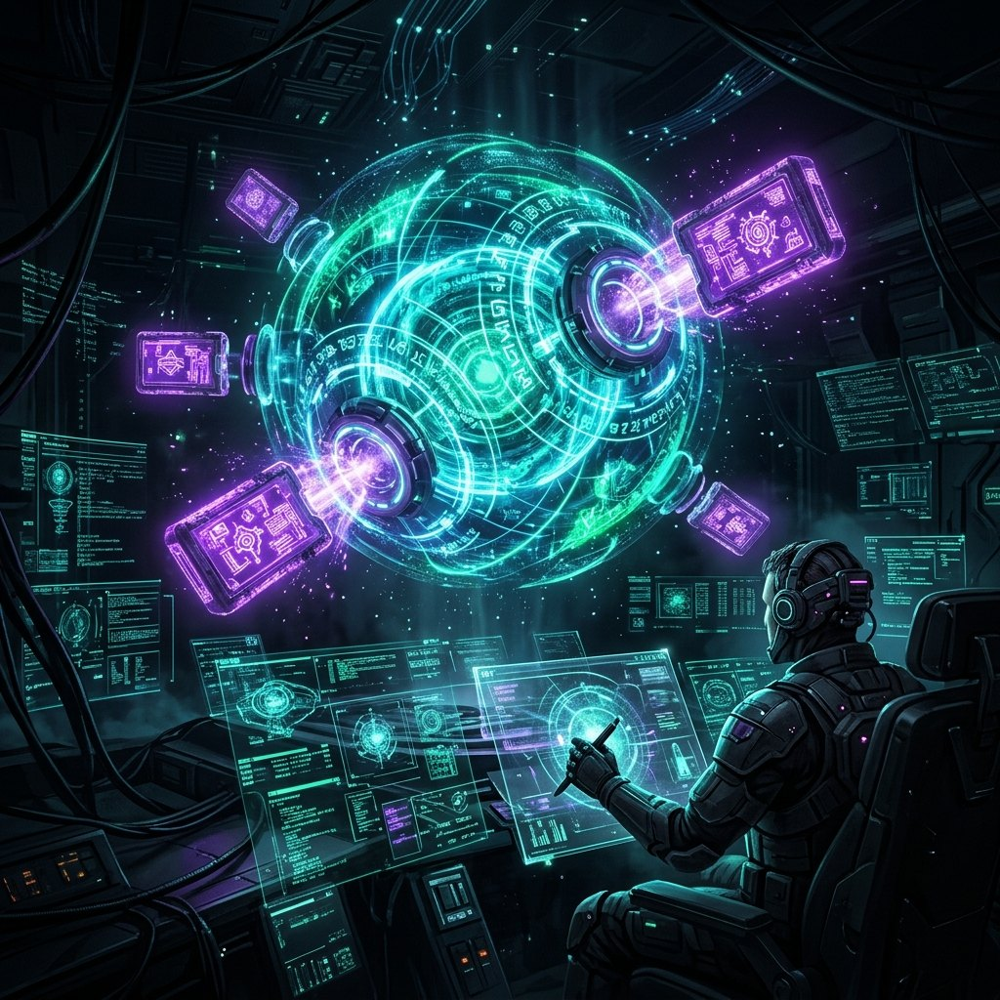

Architecting Run Nexus: Why I Built My Own AI Operating System & Portable Agent Skill Studio

Every AI builder eventually hits the same wall: you start with one clean prototype, then a second, then a dozen—and suddenly your workstation is a tangle of conflicting localhost ports, half-remembered launch flags, scattered SQLite databases, and brilliant prompt pipelines trapped inside single-purpose repositories. I built Run Nexus and Skill Holders Studio to turn that chaos into a true personal AI operating system.
From Isolated Scripts to an Integrated AI Fleet
Over the past year of intense agentic engineering, my projects stopped looking like standalone demos and started behaving like an interconnected ecosystem. On any given day, I was running a 5-agent CMMC compliance engine, a 500,000-row ML access-review workbench, a 3D WebGL OSINT globe backed by a custom Model Context Protocol (MCP) server, a headless Blender 5.0 3D studio, a Veo 3.1 media pipeline, and a 285-course generative university.
Spinning those services up manually across eight terminal tabs wasn't just annoying—it broke creative and investigative flow. I wanted a single glassmorphic command deck on port 5000 where every application, CLI parser suite, storage vault, and agent skill lived as a first-class citizen.
Inside the Run Nexus Control Plane
Under the hood, Run Nexus is driven by a declarative service registry (apps.json) paired with a process-orchestration core and live Server-Sent Events (SSE) telemetry:
- Deterministic Lifecycle Management: Each app declares its runtime environment, working directory, health endpoint, and dedicated port—from
5050for Media Generation Studio to8087for PROJECT ARGUS and32123for the SAFER AI Workbench. - Real-Time Process & Log Telemetry: Instead of tailing blind log files, Run Nexus streams subprocess stdout/stderr directly into the browser UI and tracks live PID/port health.
- Unified Storage Manager: Compliance reports, DOCX/XLSX executive bundles, SQLite caches, and rendered 3D/video artifacts can be inspected and cleaned from a single storage plane.
Skill Holders Studio: Turning Engineering Know-How into Portable Agency
The biggest leap inside Run Nexus was building Skill Holders Studio as a native Flask Blueprint. As I worked extensively with agentic coding environments and custom MCP servers, I realized that prompts alone don't scale—skills do.
A great AI Agent Skill bundles three things into a clean, portable directory:
SKILL.mdSpecification: Crisp YAML frontmatter defining exact activation triggers alongside step-by-step operational guardrails, schemas, and verification rules.- Deterministic Helper Scripts: Python utilities and API connectors so the LLM never wastes tokens reinventing math, SQL parsing, or binary provenance checks.
- Reference Schemas & Templates: Canonical output contracts (HTML, DOCX, JSON) that guarantee consistent executive-grade deliverables every single run.
That exact pattern allowed me to take my Vulnerability Verifier application and package its core SLA engine into a portable vulnerability-verifier agent skill—meaning an autonomous agent can now audit P0–P3 security backlogs, generate charts, and assemble a ZIP compliance bundle from a single sentence.
What Building an Ecosystem Taught Me
When your tools live under one roof, cross-pollination happens naturally. Techniques I perfected for asynchronous background prefetching in Self-Taught AI University informed how I queued Veo 3.1 shots in Omni-Producer; strict JSON quality gates from SAFER made my Blender Generator agents dramatically more resilient. Run Nexus isn't just a launcher—it's the compounding flywheel behind everything I build.